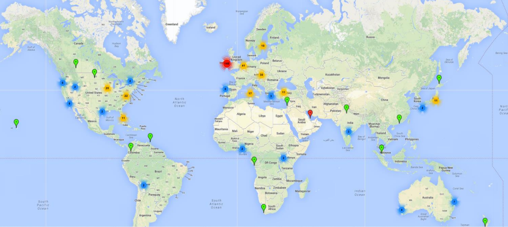
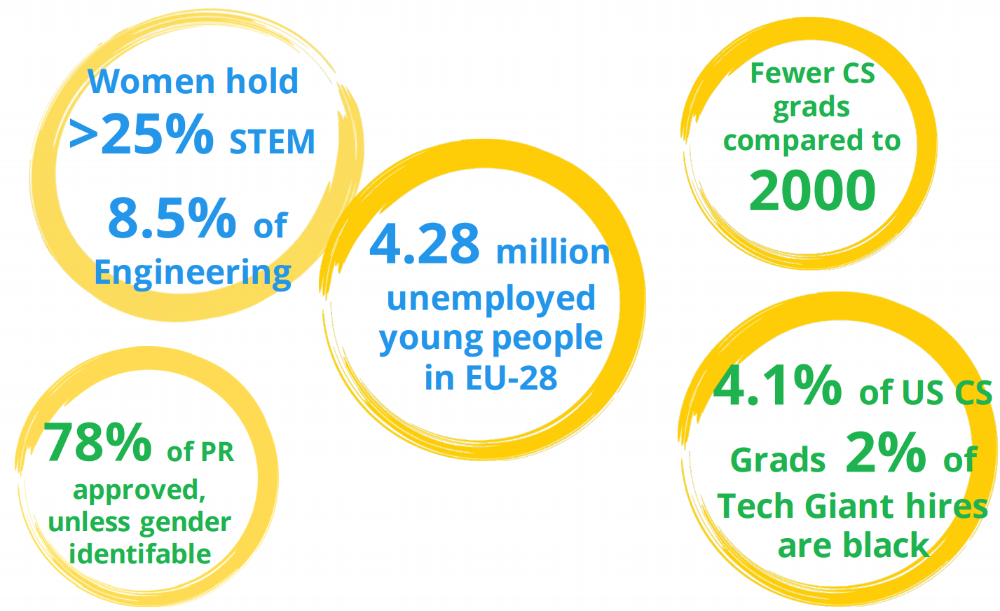

Slides by Alberto Varela / @artberri
In early 2011, the 18 year old coder James Whelton received some publicity after hacking the iPod Nano.
As a result, some of the younger students at his school expressed an interest in learning how to code and he set up a computer club in his school.
In June 2011 the first CoderDojo took place in County Cork, Ireland, ran by co-founders Bill Liao & James Whelton
Demand was massive and the movement spread rapidly around the world from the West Coast of America to Japan and Australia!
Today there are more than 1000 Dojos spread across 66 countries with more are being set up every week!

A Dojo is a volunteer-led free programming club for young people where children learn how to hack, code, build websites, apps, games and more all in a fun, social and collaborative environment all for free!
Dojos are built on community spirit, and encouraging children to mentor, collaborate and learn from each other.
“She learned how to divide complex problems into simpler parts, how to iteratively refine her designs, how to identify and fix bugs, how to share and collaborate with others, how to persevere in the face of challenges.”
Mitchel Resnick (Professor of Learning Research at the MIT Media Lab) about BlueSaturn
https://www.edsurge.com/news/2013-05-08-learn-to-code-code-to-learn
